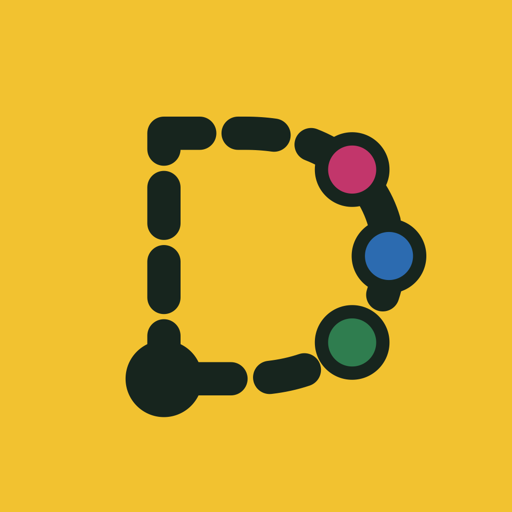
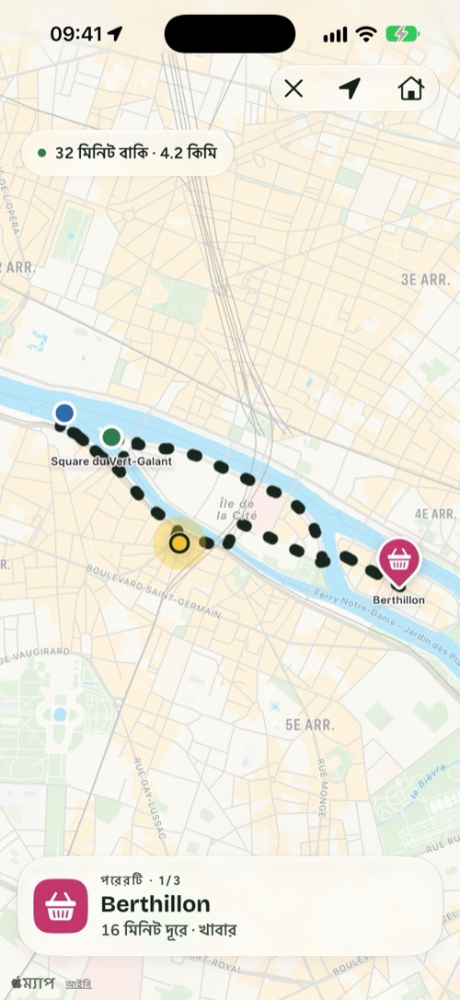
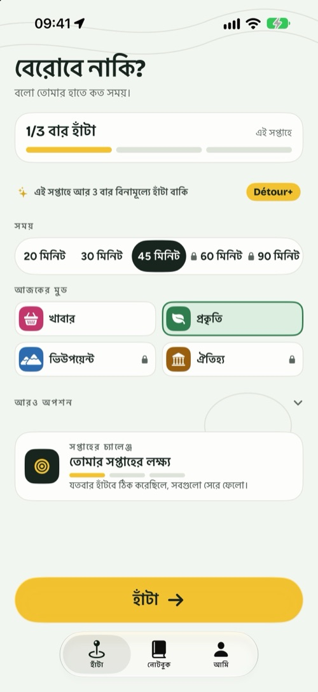
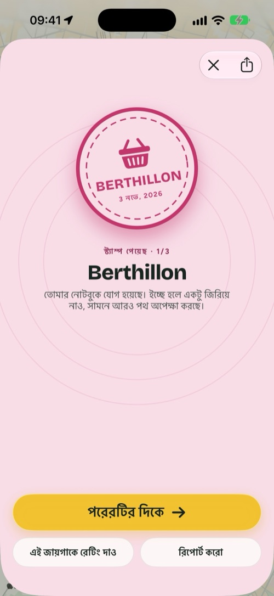
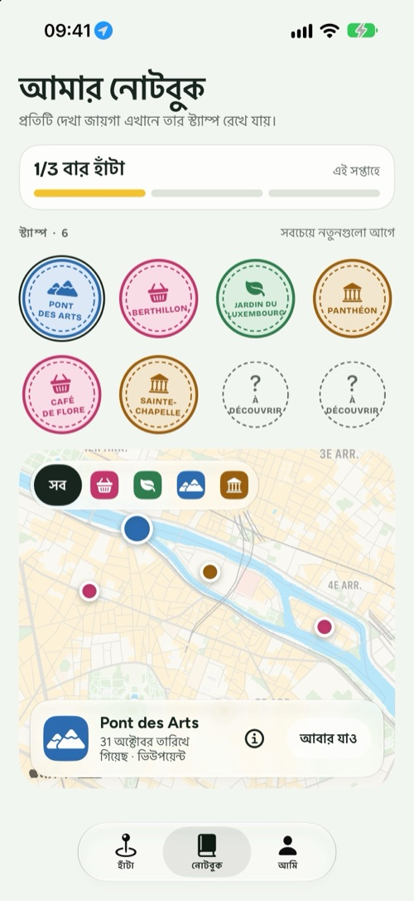
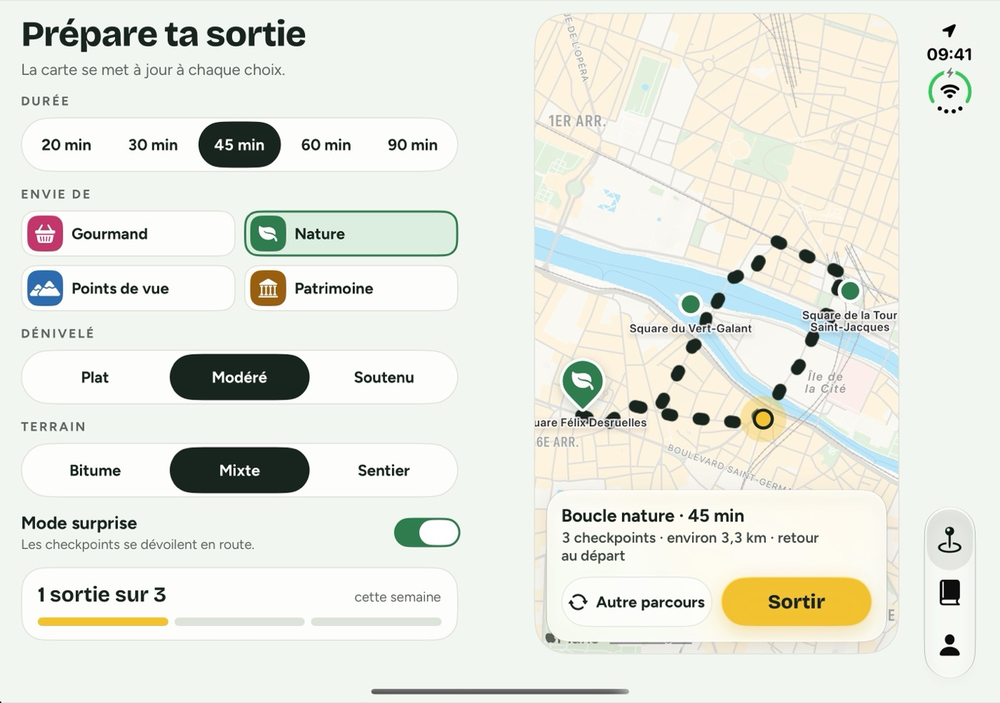

Détour
বলো তোমার হাতে কত সময়, আমি তোমাকে হাঁটতে বেরোনোর একটা ভালো কারণ দেব।
iPhone, iPad ও iPhone Duo-র জন্য · বিনামূল্যে, চাইলে Détour+

তিনটি পছন্দ, আর তুমি বেরিয়ে পড়েছ।
Détour তোমাকে ক-তে থেকে খ-তে যাওয়ার পথ দেখায় না। সে বেরোনোর একটা কারণ দেয়, আর তোমাকে বাড়ি ফিরিয়ে আনে।
তোমার সময়
২০, ৩০, ৪৫ মিনিট বা আরও বেশি। লুপ শুরু হয় তুমি যেখানে আছ সেখান থেকে, আর সেখানেই ফিরিয়ে আনে।
তোমার মুড
খাবার, প্রকৃতি, ভিউপয়েন্ট বা ঐতিহ্য: পথে ছোঁয়ার জন্য ২ থেকে ৪টি সত্যিকারের জায়গা।
চলো
পথরেখা ধরে এগোও। যে জায়গায় পৌঁছাবে, নিজে থেকেই যাচাই হয়ে যাবে আর তোমার নোটবুকে একটি স্ট্যাম্প পড়বে।
হাঁটার কারণ, শুধু ঘুরে দেখা নয়।
চার স্ক্রিনে একটি হাঁটা।



হাতে বন্ধ, ম্যাপে খোলা।
- বন্ধ অবস্থায় দরকারি সবকিছু বাইরের স্ক্রিনেই: সময়, মুড আর “চলো”।
- খুললে একদিকে সেটিংস, অন্যদিকে ফুটে ওঠে লুপ।
- সারপ্রাইজ মোড: পরের জায়গাগুলো জানা যায় চলতে চলতে।
- হাঁটার সময় পরের জায়গা আর দূরত্ব থাকে তোমার লক স্ক্রিন ও Dynamic Island-এ।
- সাপ্তাহিক লক্ষ্য, ব্যাজ, প্রতি সপ্তাহে নতুন চ্যালেঞ্জ, আর চাইলে প্রতিটি হাঁটা Apple Health-এ সেভ।

অভ্যাস গড়তে বিনামূল্যে। আরও এগোতে Détour+।
যত খুশি হাঁটা, চারটি মুডই, পথের ধরন বেছে নিয়ে ৯০ মিনিট পর্যন্ত লুপ, আর সারপ্রাইজ মোড।
বার্ষিক
বছরেশুরু ৭ দিনের বিনামূল্যে ট্রায়াল দিয়ে
মাসিক
মাসেযেকোনো সময় বাতিল করা যায়
আজীবন
একবারএকবার কেনা, চিরকালের জন্য
বিনামূল্যে: সপ্তাহে ৩ বার হাঁটা, “প্রকৃতি” ও “খাবার” মুড, সর্বোচ্চ ৪৫ মিনিট, নোটবুক আর ব্যাজ। দাম দেশভেদে আলাদা। সাবস্ক্রিপশন তোমার Apple অ্যাকাউন্টের সেটিংসে পরিচালনা ও বাতিল করা যায়।
তোমার হাঁটা তোমারই ব্যাপার।
কিছু খুলতে হয় না, কিছু মনে রাখতে হয় না। তোমার নোটবুক থাকে তোমার iPhone-এই।
লুপ আঁকতে আর জায়গা যাচাই করতে ব্যবহার হয়, শুধু হাঁটার সময়।
বিজ্ঞাপনের কোনো ট্র্যাকার নেই। বিস্তারিত আছে গোপনীয়তা নীতিতে।